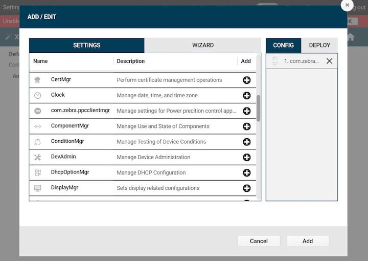

Overview
As part of Zebra DNA Visibility Console (ZDVC) starting with PowerPrecision Console (PPC) v2.0, PPC runs on a supported Windows-based server. PPC client runs on supported Zebra devices. This section provides system requirements and instructions for install and setup for the solution.
Solution components:
- ZDVC server - PPC monitors battery health, state of charge, battery status, and other information from deployed devices.
- Web portal - centralized dashboard for monitoring device presence, device tracking, battery status, and trigger actions based on battery depletion.
- PPC client - reports battery and device information to server
Before installing, ensure to prepare additional steps for system setup:
- Install SSL certificate (procured by a signed Certificate Authority) - configured on server for secure HTTPS communication
- Open specific incoming and outgoing ports - for server communication through the firewall, based on ports specified during server installation
- Add DNS (Domain Name Server) Entry - an entry is added to the DNS to map the server IP address to the domain
Important: An SSL Certificate is required from a third party certificate authority (CA), such as Verisign or Thawte. Any self-signed certificate or one issued by a non-third party CA will not work. The .pfx certificate must contain the complete certificate chain, including intermediate certificates.
System Requirements
This section provides the server and device requirements. PPC supports a maximum of 10,000 devices and 20,000 batteries per installation based on the hardware requirements.
Server Requirements
Windows Operating Systems supported:
- Windows® Server 2012, 64-bit processor
- Windows® Server 2016, 64-bit processor
Browsers supported (connect over https):
- Chrome Browser version 63 or higher
- Internet Explorer 11
- Microsoft Edge for Windows 10
- Safari for Mac version 9 or higher
Software Required (included in server installation):
- Java runtime
- Node.js version 6.11
- PostgreSQL 9.6.3-3 or higher
- PowerPrecision Console software (server and client)
Network Access Requirements:
- If required, open incoming and outgoing ports for communication between server and mobile devices through the server firewall. The default ports used are:
- Data Port 8080 for PPC client to register and upload battery data
- Web Portal Port 8443 for accessing PPC web portal
- If required, perform DNS setup to add server IP address to the DNS server.
- If required, open incoming and outgoing ports for communication between server and mobile devices through the server firewall. The default ports used are:
Hardware Requirements:
- Minimum CPU cores: 8
- Minimum memory (RAM): 4 GB
- Minimum available hard drive space: 300 GB
Recommended hardware requirements based on number of devices and batteries:
Number of Devices Number of Batteries RAM CPU Cores Hard Drive Space Up to 1,000 devices Up to 2,000 batteries 4 GB 8 cores 300 GB 1,000 to 5,000 devices 2,000 to 10,000 batteries 8 GB 8 cores 600 GB Up to 10,000 devices Up to 20,000 batteries 16 GB 16 cores 750 GB
Device Requirements
See Device Requirements.
Server Install & Setup
For existing PPC installations, uninstall PPC and ensure all PPC folders are removed. Then proceed to a new install.
For new installations, download ZDVC Server from Zebra Support and Downloads. Install ZDVC server on the supported system that meets the specified requirements. After server installation, further network and certificate setup is required to allow communication between the server and devices via DNS and firewall. Instructions for server installation and setup:
Server Prerequisites
The following are the prerequisites required for the server:
DNS (Domain Name Server) Setup. ZDVC server runs in a domain, for example name.company.com. An entry with the hostname and corresponding IP address is required in the DNS server for name resolution. The DNS server and ZDVC server are required to be on the same network. Contact your local IT Administrator to configure the domain to IP address mapping.
SSL Certificate. ZDVC requires an SSL certificate for secure communications. The certificate must be in .pfx format and set with a password. See Server Certificate Procurement for details.
Open Inbound/Outbound Ports on the Firewall. The appropriate ports are required to be opened for inbound/outbound network traffic flow through the firewall for communication between the server and devices. The UI and Backend Server ports are specified during server install. The method to open the ports depends on the firewall software used by the network administrator.
- UI Port: inbound and outbound (e.g. port 8080)
- Backend Server Port: inbound (e.g. port 8443)
Server Installation
Double-click on the ZDVC installer and follow the steps to proceed with installation until the server has been successfully installed.
Server Setup
Steps for ZDVC server setup after installation:
- Run ZDVC Server Software. Start the server services by launching the desktop shortcut icon "START_ZDVC_SERVICE".
- View the web portal. Open a supported browser. Enter the default server URL:
https://name.company.com:8443/zdvc, where "name.company.com:8443" is replaced with the appropriate domain and port number. - Select app to launch. As part of ZDVC, the server consists of multiple solution offerings. Select "PowerPrecision Console" then enter the login credentials to login.
- Server certificate validation. Use an SSL Tool (such as ssltools.com) to aid in diagnostics and validate the certificate chain.
A. Open ssltools.com in the browser.
B. Enter the Web UI URL, for examplehttps://name.company.com:8443/zdvc
C. Click the Scan button. A successful result returns green checks for each step. See Figure 1 below.
D. Enter the backend URL for your server, for examplehttps://name.company.com:8080/zdvc
E. Click the Scan button. A successful result returns green checks for each step: Figure 1. SSLTools.com results
Figure 1. SSLTools.com results
Server Certificate Procurement
Procedure to procure the server certificate, if needed:
Intermediate Root Certificate Generation and CSR (Certificate Signing Request) Signing from CA. Procedure to generate a CSR to send to a CA for signing, configuring a custom intermediate root certificate for SSL:
A. Download OpenSSL for Windows. Follow the instructions stated to download the file based on your Windows configuration.
B. Install the downloaded OpenSSL EXE/MSI.
C. Add a new "openSSL" environment variable to the Windows system and set the value to the location where openSSL is installed (e.g. "C:\Program Files\OpenSSL-Win64\bin\").
D. Create a folder named "CSR_Request". Open the command prompt to this folder path.
E. Run the following command to generate a private key and CSR file:
openSSL req -newkey rsa:2048 -nodes -keyout zdvc_private_key.key -out zdvc_cert_sign_req.csr
Where "zdvc_cert_sign_req.csr" and "zdvc_private_key.key" can be replaced with custom file names.
F. Enter in the required fields when prompted:- Country Name - Enter the two-letter code without punctuation for country, for example: US or CA.
- State or Province - Enter the full state or province name without abbreviation, for example: California.
- Locality or City - Enter the city or town name without abbreviation, for example: Berkeley or Saint Louis.
- Company - Enter the company. If the company or department contains a special characteres such as "&" or "@" the symbol must be spelled out or omitted in order to enroll successfully.
- Organizational Unit - Enter the name of the department or organization unit making the request. This is optional, to skip, press Enter on the keyboard.
- Common Name - Enter the Host and Domain Name, following the same format as these examplese: "www.zebra.com" or "zebra.com". Note: Symantec certificates can only be used on web servers using the Common Name specified during enrollment. For example, a certificate for the domain "zebra.com" will receive a warning if accessing a site named "www.zebra.com" or "secure.zebra.com" since "www.zebra.com" and "secure.zebra.com" are different from "zebra.com."
G. Enter the challenge password when prompted. This is the password needed when generating the certificate in .pfx format.
H. A .csr file is created in the "CSR_Request" folder. Submit this file to the CA to have it signed.
I. Obtain the certificate bundle from the CA in .pkcs format and certificate in .p7b format (which includes the public key).Generate SSL Certificate. An SSL certificate is required for secured connections based on the intermediate root certificate from step 2. Zebra recommends the certificate to be procured in .p7b format and the certificate private key to be a .key file. If the certificates are in different format, use a SSL certificate converter tool to convert to the proper format.
A. Create an empty directory named "generated_certs" to contain the .pfx certificate.
B. Copy the following certificate files to "generated_certs" folder: primary certificate (e.g. "ssl_certificate.p7b"), private key (e.g. "zdvc_private_key.key"), and intermediate CA certificate (e.g. "IntermediateCA.cer"). The intermediate CA certificate is optional - use if required in the certificate chain.
C. Open a command prompt. Execute the following command to generate "ssl_certificate.cer":
openssl pkcs7 -print_certs -in ssl_certificate.p7b -out ssl_certificate.cer
D. At the command prompt, execute the following command:
openssl pkcs12 -export -in ssl_certificate.cer -inkey zdvc_private_key.key -out ssl_certificate.pfx -certfile IntermediateCA.cer
Where "-certfile IntermediateCA.cer" is optional.
E. When prompted, enter the certificate password to export "ssl_certificate.pfx". This is the challenge password specified in step 2.G. above.
F. Copy the SSL certificate "ssl_certificate.pfx" with domain name “name.company.com” to a designated folder.
Client Install & Setup
Install PPC client on the supported Zebra devices to register the device, upload device battery data and display end-of-life (EOL) battery alerts. The device must be connected to the same network as the server. The server address needs to be configured on the PPC client to communicate with the PPC Server. PPC client install and setup can be accomplished either manually or remotely with Zebra's StageNow or an EMM (Enterprise Mobility Management).
Installation
Steps for client installation:
- Download PPC Client from Zebra Support and Downloads. Extract the files and folders.
- Install PowerPrecisionConsole.apk.
- For Android Marshmallow and Nougat devices, install the .APK located in folder PPCClient\Client\M_N.
- For Android Oreo devices, install the .APK located in folder PPCClient\Client\O.
- When prompted, enable the “Apps that can draw over other apps” overlay permission.
- For remote configuration using StageNow or an EMM (using XML or Managed Config), install PPCClientMgr.apk located in PPCClient\PluginCSP
Configuration
Configure the server address and port either manually or remotely. For information on using CSP for remote configuration deployment, refer to MX documentation.
Manual Configuration
Steps for manual configuration:
- Open PowerPrecision Console Client.
- If prompted, enable the “Apps that can draw over other apps” overlay permission.
- Tap the hamburger menu at the top right, then tap Settings.
- Tap Server URL. Enter in the server URL, for example: name.company.com:8080/zdvc/ppc
Where "name.company.com:8080" is replaced with the appropriate domain name and port number.
Note: The URL must not contain "https://". - Tap OK to save the changes and return to the main screen. PPC Client registers with the server and uploads battery data.
Remote Configuration Deployment
Steps for remote configuration with StageNow and CSP Plug-in, with the option of deployment through Enterprise Mobile Management (EMM):Download PPC Client software from Zebra Support and Downloads. Extract the files.
Compress two files distributed as part of the PPC Client software into a single .zip file:
- com.zebra.ppcclientmgr.dsd
- PPCClientMgr.apk (PPC Client CSP Manager Plug-in)
Open StageNow.
Import the CSP Plugin Library.
A. In the StageNow home screen, click “CSP Library” from the left menu.
B. Upload the .zip file to the CSP Library by clicking “Choose File” then browsing to the .zip file, or by dragging and dropping the .zip file.
C. Once successfully uploaded, the CSP Library is listed in the Plugin tab.
Figure 2. Import plugin into CSP LibraryCreate a new setting.
A. In the StageNow home screen, click “All Settings” from the left menu. Click “Create Setting” button at the top right.
 Figure 3. Import into CSP Library
Figure 3. Import into CSP Library
B. For the “Setting Type”, select “com.zebra.ppclientmgr." Enter a name for the setting. Enter the server URL e.g.ppc.zebra.com:8080/ppcdata. Select the desired option to determine whether or not to allow the end user to edit the setting. Select the MX version for the device.
 Figure 4. Create New Setting
Figure 4. Create New Setting
C. Tap Save. The new setting is listed in the Settings screen.Create profile.
A. In the StageNow home screen, click “Create New Profile” from the left menu.
B. Make sure the proper MX version is selected.
C. Select “XpertMode." Click Create.
D. Enter the profile name. Click Start.
E. In the Settings list, click the add (+) sign next to “com.zebra.ppcclientmgr”. This adds to the Config tab on the right side. Click on Add button.
 Figure 5. Add CSP to profile
F. In the StageNow Config section, click “Re-use Saved Setting” tab. The screen is populated with the information from the setting created in step 5. Figure 6. Re-use saved setting
Figure 6. Re-use saved setting
G. Click Continue.
H. In the Review section, review the settings and make modifications if needed. Click “Complete Profile."
I. In the Publish section, select the desired barcode type. Figure 7. Generate StageNow barcode
Figure 7. Generate StageNow barcode
J. Click Test. A window opens with the generated StageNow barcode in .pdf format.For EMM Staging, continue to section "Steps for EMM Staging" below.
Open the StageNow client on the device.
Scan the barcode with the StageNow client to configure the PPC Client.
For more information refer to StageNow download and StageNow documentation.
Steps for EMM Staging (optional):
- Follow the steps above for "Remote Configuration Deployment with StageNow and CSP Plugin" up to step 6.
- Select the "Export option for EMM" to export the .xml file. Save the .xml file.
 Figure 8. Export for EMM
Figure 8. Export for EMM - Push the .xml settings via EMM to the device for PPC Client configuration.